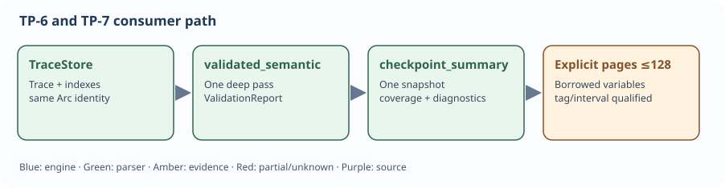

<!doctype html>
<html lang="en"><head><meta charset="utf-8"><meta name="viewport" content="width=device-width, initial-scale=1"><meta name="color-scheme" content="light dark"><title>Worked API walkthrough — Visual C Stage 1</title><meta name="description" content="Offline Visual C Stage 1 systems documentation: Worked API walkthrough"><link rel="stylesheet" href="assets/site.css"><script src="assets/search-data.js" defer></script><script src="assets/site.js" defer></script></head>
<body><a class="skip" href="#main">Skip to content</a><header class="topbar"><button class="nav-toggle" type="button" aria-label="Open navigation" aria-controls="sidebar" aria-expanded="false">☰</button><a class="brand" href="index.html" aria-label="Visual C documentation home"><span class="brandmark">V<span>C</span></span> Visual C <small>Stage 1 · V2.2</small></a><div class="top-actions"><button class="search-toggle" type="button" aria-label="Search documentation">⌕ <span>Search <kbd>/</kbd></span></button><button class="theme-toggle" type="button" aria-label="Change color theme" title="Switch light or dark mode">◐</button></div></header>
<div class="shell"><aside class="sidebar" id="sidebar" aria-label="Documentation navigation"><nav><div class="nav-group"><div class="nav-label">Getting Started</div><a href="index.html">Documentation home</a><a href="reading.html">How to read this reference</a><a href="architecture.html">What Stage 1 does</a></div><div class="nav-group"><div class="nav-label">Architecture</div><a href="pipeline.html">Complete pipeline</a><a href="engine-architecture.html">Trace Engine architecture</a><a href="parser-architecture.html">Trace Parser architecture</a><a href="identity-contracts.html">Evidence and identity contracts</a><a href="resource-boundaries.html">Process and resource boundaries</a></div><div class="nav-group"><div class="nav-label">Developer Internals</div><a href="repository.html">Repository map</a><a href="files.html">Source file index</a><a href="functions.html">Function index</a><a href="dependencies.html">Module dependency explorer</a><a href="call-flow.html">Interactive call-flow explorer</a></div><div class="nav-group"><div class="nav-label">Trace Engine</div><a href="engine-build.html">Compilation &amp; diagnostics</a><a href="engine-debugger.html">GDB/MI and checkpoints</a><a href="engine-memory.html">Frames, variables &amp; memory</a><a href="engine-metadata.html">DWARF, Clang &amp; fusion</a><a href="engine-heap.html">Allocation lifetimes</a><a href="engine-diagnostics.html">Valgrind &amp; sanitizers</a><a href="engine-process.html">Processes &amp; event transport</a><a href="engine-limits.html">Budgets, gaps &amp; export</a></div><div class="nav-group"><div class="nav-label">Trace Engine Internals</div><a href="engine-entry-deep.html">Entry, configuration &amp; errors</a><a href="engine-compiler-deep.html">Compiler &amp; diagnostics</a><a href="engine-gdb-deep.html">GDB controller &amp; stop loop</a><a href="engine-mi-deep.html">MI2 parser &amp; transport</a><a href="engine-recorder-deep.html">Recorder &amp; journals</a><a href="engine-stack-deep.html">Frames, variables &amp; memory</a><a href="engine-dwarf-deep.html">DWARF extraction</a><a href="engine-ast-deep.html">Clang AST provider</a><a href="engine-allocator-deep.html">C allocator runtime</a><a href="engine-heap-deep.html">Heap reconstruction</a><a href="engine-diagnostics-deep.html">Valgrind &amp; sanitizer internals</a><a href="engine-fusion-deep.html">Evidence fusion internals</a><a href="engine-supervision-deep.html">Supervision &amp; resource limits</a><a href="engine-export-deep.html">Trace model, journal &amp; export</a><a href="engine-walkthroughs.html">Subsystem walkthroughs</a><a href="engine-handbook.html">Source file handbook</a><a href="engine-algorithms.html">Algorithms &amp; invariants</a><a href="engine-functions.html">Trace Engine function reference</a></div><div class="nav-group"><div class="nav-label">Data model</div><a href="model.html">Trace data model</a></div><div class="nav-group"><div class="nav-label">Trace Parser</div><a href="parser-ingestion.html">TP-1 · Load &amp; compatibility</a><a href="parser-indexes.html">TP-2 · Position indexes</a><a href="parser-views.html">TP-3 · Borrowed views</a><a href="parser-validation.html">TP-5 · Deep validation</a><a href="parser-semantic.html">TP-6 · Evidence confidence</a><a href="parser-consumer.html">TP-7 · Bounded queries</a></div><div class="nav-group"><div class="nav-label">Trace Parser Internals</div><a href="parser-ingestion-deep.html">JSON and JSONL ingestion</a><a href="parser-ownership-deep.html">Ownership, views &amp; evidence references</a><a href="parser-indexes-deep.html">Compact position indexes</a><a href="parser-validation-deep.html">Deep validation architecture</a><a href="parser-realloc-deep.html">Realloc verification and TP8-F01</a><a href="parser-coverage-deep.html">Pointer provenance &amp; process coverage</a><a href="parser-semantic-deep.html">TP-6 validated semantic evidence</a><a href="parser-consumer-deep.html">TP-7 consumer composition</a><a href="parser-data-structures.html">Parser data structures</a><a href="parser-algorithms.html">Parser algorithms &amp; invariants</a><a href="parser-walkthroughs.html">Parser walkthroughs</a><a href="parser-handbook.html">Parser source file handbook</a><a href="parser-functions.html">Parser function reference</a></div><div class="nav-group"><div class="nav-label">Execution Walkthroughs</div><a href="walkthroughs.html">Execution walkthroughs</a></div><div class="nav-group"><div class="nav-label">Practical usage</div><a href="usage.html" aria-current="page">Worked API walkthrough</a></div><div class="nav-group"><div class="nav-label">Reference</div><a href="api.html">Public API reference</a><a href="stage1-api.html">Stage 1 public API</a><a href="schema.html">Schema &amp; identity reference</a><a href="handoff.html">Stage 2 handoff &amp; limits</a><a href="glossary.html">Terminology and glossary</a><a href="limitations.html">Known limitations</a></div><div class="nav-group"><div class="nav-label">Execution Walkthroughs</div><p class="nav-planned">Planned for DOC-4</p></div></nav><div class="side-foot">Offline reference · schema v2<br>Engine + Parser, not Stage 2</div></aside><main id="main" tabindex="-1"><nav class="breadcrumbs" aria-label="Breadcrumbs"><a href="index.html">Documentation</a><span aria-hidden="true">›</span><span>Practical usage</span><span aria-hidden="true">›</span><span aria-current="page">Worked API walkthrough</span></nav><article class="document"><h1 id="61-practical-usage-from-c-file-to-borrowed-evidence">61 · Practical usage · from C file to borrowed evidence <a class="anchor" href="#61-practical-usage-from-c-file-to-borrowed-evidence" aria-label="Link to 61 · Practical usage · from C file to borrowed evidence">#</a></h1>
<aside class="admonition note" role="note"><p><strong>In one sentence:</strong> This page is the hands-on route: record a small C program, open the resulting JSON, and ask one careful question at a time.</p></aside>
<h2 id="key-terms">Key terms <a class="anchor" href="#key-terms" aria-label="Link to Key terms">#</a></h2>
<div class="table-scroll"><table><thead><tr><th scope="col">Term</th><th scope="col">Plain meaning</th></tr></thead><tbody><tr><td><strong>CLI</strong></td><td>The commands and flags you type to run the trace engine.</td></tr><tr><td><strong>Consumer</strong></td><td>Your Rust code reading the finished trace through the parser&#x27;s public API.</td></tr></tbody></table></div>
<aside class="admonition note" role="note"><p><strong>Example.</strong> After recording, check the program&#x27;s outcome and the validation report. Then request a checkpoint&#x27;s first page; if there are more than 128 results, request the next page explicitly.</p></aside>
<p>&gt;</p>
<aside class="admonition note" role="note"><p><strong>What not to assume:</strong> The example&#x27;s chosen stop and address are observations from one run, not identifiers you can reuse in another run.</p></aside>
<h2 id="level-1-intuition">Level 1 · Intuition <a class="anchor" href="#level-1-intuition" aria-label="Link to Level 1 · Intuition">#</a></h2>
<p>Run the engine to obtain a JSON document, then parse <strong>that document</strong> and check its deep-validation report before asking what happened at a checkpoint. One parser store can serve many readers. Observations stay historical; a missing diagnosis or event is not a proven absence.</p>
<figure class="diagram"><a href="diagrams/consumer.svg" aria-label="Open full-size TP-6 and TP-7 consumer path diagram"></a><figcaption><strong>Figure · TP-6 and TP-7 consumer path.</strong> A single validated view holds the report and borrows the store; checkpoint summary and bounded pages provide trace-scoped references and qualified events without copying records. <a href="diagrams/consumer.svg">View SVG</a></figcaption></figure>
<h2 id="level-2-run-a-recording">Level 2 · Run a recording <a class="anchor" href="#level-2-run-a-recording" aria-label="Link to Level 2 · Run a recording">#</a></h2>
<p>From the repository root on the supported Linux toolchain:</p>
<div class="code-head"><span>SH</span><button type="button" class="copy" aria-label="Copy code">Copy</button></div><pre class="language-sh"><code><span class="tok-keyword">cargo</span> build --release
<span class="tok-keyword">target</span>/release/c-trace-engine fixtures/c/phase8b_defined.c \
  --trace-mode dual --max-steps <span class="tok-number">350</span> --timeout <span class="tok-number">50</span> \
  --clang-ast --sanitizer-trigger never \
  --journal /tmp/visual-c-session.jsonl \
  --no-pretty --output /tmp/visual-c-session.json
<span class="tok-keyword">python3</span> -m json.tool /tmp/visual-c-session.json &gt; /tmp/visual-c-readable.json</code></pre>
<p>GCC/GDB must be installed; Clang is optional for this command&#x27;s <code>--clang-ast</code> pass (without it, remove the flag). Valgrind may run as an independent stage if available; <code>--sanitizer-trigger never</code> disables the separate sanitizer run. Do not pass <code>--</code> before engine options; only <strong>program arguments</strong> follow <code>--</code>. The engine writes one full JSON document to <code>--output</code>; JSONL can be parsed for records but <strong>not</strong> loaded as a complete <code>TraceStore</code>. Journals are never overwritten: choose a fresh <code>--journal</code> path for each repeat run (or remove your previous audit-owned temporary file first). See <a href="engine-build.html">compilation</a>, <a href="engine-limits.html">deadline policy</a> and the <a href="parser-ingestion.html">input schema</a>.</p>
<h3 id="a-real-captured-pointer-carefully-read">A real captured pointer, carefully read <a class="anchor" href="#a-real-captured-pointer-carefully-read" aria-label="Link to A real captured pointer, carefully read">#</a></h3>
<p>The audited <code>phase8b_defined.c</code> trace&#x27;s frame-0 <code>heap</code> variable at snapshot 4 recorded <code>points_to=&quot;0x705010&quot;</code> and the following <em>abridged, exact-field</em> pointer target:</p>
<div class="code-head"><span>JSON</span><button type="button" class="copy" aria-label="Copy code">Copy</button></div><pre class="language-json"><code>{<span class="tok-string">&quot;kind&quot;</span>:<span class="tok-string">&quot;heap&quot;</span>,<span class="tok-string">&quot;allocation_id&quot;</span>:<span class="tok-keyword">null</span>,<span class="tok-string">&quot;base_address&quot;</span>:<span class="tok-string">&quot;0x705010&quot;</span>,<span class="tok-string">&quot;offset_bytes&quot;</span>:<span class="tok-number">0</span>,<span class="tok-string">&quot;active&quot;</span>:<span class="tok-keyword">true</span>,<span class="tok-string">&quot;within_extent&quot;</span>:<span class="tok-keyword">true</span>,<span class="tok-string">&quot;variable_identity&quot;</span>:<span class="tok-keyword">null</span>,<span class="tok-string">&quot;address_match_allocation_id&quot;</span>:<span class="tok-number">1</span>,<span class="tok-string">&quot;provenance_status&quot;</span>:<span class="tok-string">&quot;address_only&quot;</span>}</code></pre>
<p>The raw event at sequence 1 created allocation ID 1 at <code>0x705010</code>. <strong>Matching the numeric address did not certify the pointer&#x27;s provenance</strong>: <code>allocation_id</code> stayed null and the evidence layer&#x27;s <code>definitive_allocation</code> remains <code>None</code>. Addresses/PIDs can change in new runs; do not hardcode these values. At the same run&#x27;s <code>checkpoint</code> line 15, snapshot 36 / GDB stop 119 / attempted instruction position 116 are <strong>different identifiers</strong>; <code>sum</code> displayed <code>&quot;10&quot;</code> with bytes <code>&quot;0a000000&quot;</code>.</p>
<h2 id="level-3-load-and-validate">Level 3 · Load and validate <a class="anchor" href="#level-3-load-and-validate" aria-label="Link to Level 3 · Load and validate">#</a></h2>
<p>The following is a <strong>complete</strong> Rust example body for <code>examples/stage1_docs_consumer.rs</code>; it uses only public APIs. Save it there and run <code>cargo run --example stage1_docs_consumer -- /tmp/visual-c-session.json</code> (or use the checked-in larger audit consumer <code>cargo run --release --example stage1_public_consumer_audit -- /tmp/visual-c-session.json</code>).</p>
<div class="code-head"><span>RUST</span><button type="button" class="copy" aria-label="Copy code">Copy</button></div><pre class="language-rust"><code><span class="tok-keyword">use</span> c_trace_engine::trace_parser::{
    EvidenceLocation, TraceLoadOptions, TraceStore, VariableScope, MAX_CONSUMER_PAGE,
};
<span class="tok-keyword">fn</span> main() -&gt; Result&lt;(), Box&lt;dyn std::error::Error&gt;&gt; {
    <span class="tok-keyword">let</span> path = std::env::args().nth(<span class="tok-number">1</span>).ok_or(<span class="tok-string">&quot;provide trace JSON path&quot;</span>)?;
    <span class="tok-keyword">let</span> store = TraceStore::open(&amp;path, TraceLoadOptions::default())?;
    <span class="tok-keyword">let</span> view = store.validated_semantic(); <span class="tok-comment">// one deep validation pass</span>
    <span class="tok-keyword">for</span> finding <span class="tok-keyword">in</span> view.report().findings() {
        eprintln!(<span class="tok-string">&quot;{}: {} ({})&quot;</span>, finding.severity.label(), finding.code, finding.location);
    }
    <span class="tok-keyword">if</span> !view.report().is_structurally_sound() {
        <span class="tok-keyword">return</span> <span class="tok-keyword">Err</span>(<span class="tok-string">&quot;contradictory imported relationships; inspect raw evidence&quot;</span>.into());
    }
    println!(<span class="tok-string">&quot;status={:?} partial={}&quot;</span>, view.execution().status, view.report().is_partial());
    <span class="tok-keyword">for</span> index <span class="tok-keyword">in</span> <span class="tok-number">0</span>..store.trace().snapshots.len() {
        <span class="tok-keyword">let</span> stop = view.checkpoint_summary(index)?;
        assert_eq!(stop.reference.location(), EvidenceLocation::Snapshot(index));
        <span class="tok-keyword">let</span> locals = stop.checkpoint.context.variables().len();
        <span class="tok-keyword">for</span> start <span class="tok-keyword">in</span> (<span class="tok-number">0</span>..locals).step_by(MAX_CONSUMER_PAGE) {
            <span class="tok-keyword">let</span> end = (start + MAX_CONSUMER_PAGE).min(locals);
            <span class="tok-keyword">for</span> entry <span class="tok-keyword">in</span> stop.variables_page(VariableScope::Local, start..end)? {
                <span class="tok-keyword">let</span> var = entry?;
                println!(<span class="tok-string">&quot;{}: {:?}&quot;</span>, var.info.name, var.value_confidence);
                <span class="tok-keyword">if</span> <span class="tok-keyword">let</span> <span class="tok-keyword">Some</span>(ptr) = &amp;var.pointer {
                    println!(<span class="tok-string">&quot;address candidate={:?}; provenance={:?}&quot;</span>,
                        ptr.address_candidate, ptr.definitive_allocation);
                }
            }
        }
    }
    <span class="tok-keyword">let</span> process = view.process_coverage();
    println!(<span class="tok-string">&quot;observed scope={:?}; descendants={:?}&quot;</span>,
             process.scope, process.unobserved_descendants);
    <span class="tok-keyword">Ok</span>(())
}</code></pre>
<h3 id="checkpoints-and-paging">Checkpoints and paging <a class="anchor" href="#checkpoints-and-paging" aria-label="Link to Checkpoints and paging">#</a></h3>
<p>This example iterates all retained checkpoints and requests half-open pages of ≤128 locals. It never suppresses a page error or promotes address containment to provenance. Other page lengths come from the actual context (<code>globals()</code>, <code>caller_frames()</code>), event slice (<code>events_at_checkpoint()?</code>) or allocation-position index (<code>heap_event_positions_for_allocation(id)</code>); always request subsequent ranges explicitly. Use <code>view.heap_reference(&amp;ref)</code> for trace-scoped heap evidence, <code>view.diagnostics()</code> for independent reports, and <a href="parser-consumer.html">6</a> for per-stop composition. The <a href="api.html">API reference</a> details the signatures.</p>
<h3 id="troubleshooting">Troubleshooting <a class="anchor" href="#troubleshooting" aria-label="Link to Troubleshooting">#</a></h3>
<div class="table-scroll"><table><thead><tr><th scope="col">Symptom</th><th scope="col">What to check</th></tr></thead><tbody><tr><td><code>CompileFailed</code>, no snapshots</td><td><code>compile_errors</code>, <code>stage_results.compiler</code> and tool versions; a syntax error is not an empty successful run</td></tr><tr><td><code>ForeignTrace</code></td><td>Do not pass <code>EvidenceRef</code> from a separately loaded JSON, even if bytes are identical</td></tr><tr><td><code>Unavailable</code> AST/bytes</td><td>Was <code>--clang-ast</code> enabled? Was memory readable and within its budget? Unknown is not zero</td></tr><tr><td><code>StepLimitReached</code> / missing heap ACK</td><td>Consult coverage, gaps, heap history, stage results and partial findings</td></tr><tr><td><code>InvalidRange</code> / <code>LimitExceeded</code></td><td>Use <code>start..end</code> with <code>end≤len</code> and <code>end-start≤128</code>; do not truncate silently</td></tr><tr><td><code>REALLOC_LINK_CONTRADICTORY</code></td><td>Imported predecessor disagrees with event/lifetime; inspect <a href="parser-validation.html#realloc-link-verification">verification rules</a></td></tr></tbody></table></div>
<aside class="admonition note" role="note"><p>NOTE: A structurally sound report can still be partial or missing optional evidence. Treat the report and each per-relationship confidence as <strong>different questions</strong>.</p></aside></article><nav class="pager" aria-label="Adjacent pages"><a href="walkthroughs.html">← Execution walkthroughs</a><a href="api.html">Public API reference →</a></nav><footer class="footer">Visual C Stage 1 · Offline documentation · <a href="handoff.html">Evidence contract</a> · <a href="../stage1-final-audit.md">Freeze audit (Markdown)</a></footer></main><aside class="right-toc" aria-label="On this page"><p>On this page</p><nav><a href="#key-terms" class="toc-2">Key terms</a><a href="#level-1-intuition" class="toc-2">Level 1 · Intuition</a><a href="#level-2-run-a-recording" class="toc-2">Level 2 · Run a recording</a><a href="#a-real-captured-pointer-carefully-read" class="toc-3">A real captured pointer, carefully read</a><a href="#level-3-load-and-validate" class="toc-2">Level 3 · Load and validate</a><a href="#checkpoints-and-paging" class="toc-3">Checkpoints and paging</a><a href="#troubleshooting" class="toc-3">Troubleshooting</a></nav></aside></div>
<div class="search-overlay" hidden><div class="search-dialog" role="dialog" aria-modal="true" aria-label="Search documentation"><label for="site-search">Search Stage 1 reference <kbd>Esc</kbd></label><input type="search" id="site-search" placeholder="Try “realloc”, “EvidenceRef”, “GDB” …" autocomplete="off"><div class="search-results" role="status" aria-live="polite"></div></div></div></body></html>
